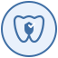

Preventive Care
Preventive care is the foundation of a healthy smile. Our routine checkups include comprehensive exams, professional cleanings, digital x-rays, and personalized guidance to help you prevent cavities and gum disease before they become bigger problems.
- Comprehensive oral exams and cleanings
- Digital x-rays and oral cancer screening
- Fluoride and sealants when appropriate
- At-home hygiene coaching tailored to you